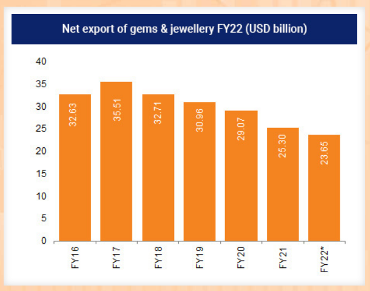
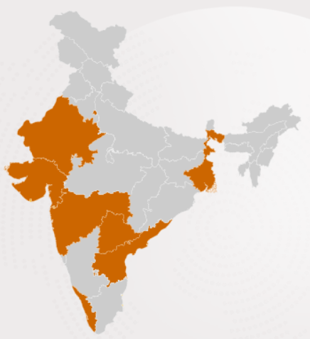

GEMS AND JEWELERY
Last updated on: May 10, 2024
Overview
-
India's gems and jewelery exports reached US$ 26.35
billion during April 2023 - January 2024.
-
In 2022, India ranks first among the top exporters
in cut & polished diamonds, and second in gold jewelery,
silver jewelery and lab-grown diamonds.
-
In September 2023, Malbar Group invested US$ 120
million (Rs. 1,000 crore) by 2025.
-
Cumulative FDI inflows in diamond and gold ornaments
in India stood at US$ 1,270.63 million between April
2000-December 2023.
-
The Government has permitted 100% FDI under the automatic
route in this sector.
-
The Government has reduced custom duty on cut and polished
diamond and colored gemstones from 7.5% to 5% and NIL.
-
As of January 2022, India’s gold and diamond trade contributed
~7% to India’s Gross Domestic Product (GDP). The gems and
jewellery sector has employs ~5 million. Based on its potential
for growth and value addition, the Government declared the gems
and jewellery sector as a focus area for export promotion.
Market Size
|

|
-
India’s gems and jewellery market size was at
US$ 78.50 billion in FY21. Growth in exports
is mainly due to revived import demand in the
export market of the US and the fulfilment of
orders received by numerous Indian exhibitors
during the Virtual Buyer-Seller Meets (VBSMs)
conducted by GJEPC.
-
India’s total gems and jewellery exports reached
US$ 37.73 billion in 2022-23. From April-January
2024, India's gems and jewellery exports were at
US$ 26.35 billion, a 16.03% decline compared to
the previous year's period.
|
Major Hubs
Major Hubs
- Surat
- Mumbai
- Jaipur
- Thrichor
- Nellore
- Delhi
- Hyderabad
- Kolkata
|
Industry contacts
-
Gems and Jewellery Export Promotion Council of India (GJEPC)
-
All India Gems and Jewellery Trade Federation (GJF)
|

|
Companies listed on BSE
Gitanjali Gems Ltd
- Dead company: Share price dead
Goenka Diamond & Jewels Ltd
- Dead company: PE, PB, Share price dead
Goldiam International Ltd
- Share price stable for past two years.
- PB okay, Assets and Liabilities okay.
- Income, Assests and Liabilities okay.
Kalyan Jewellers India Ltd
Kanani Industries Ltd
Manoj Vaibhav Gems N Jewellers Ltd
Motisons Jewellers Ltd
PC Jeweller Ltd
Penta Gold Ltd
Radhika Jeweltech Ltd
Rajesh Exports Ltd
RBZ Jewellers Ltd
Renaissance Global Ltd
Senco Gold Ltd
Silgo Retail Ltd
Sky Gold Ltd
Tribhovandas Bhimji Zaveri Ltd
Thangamayil Jewellery Ltd
Titan Company Ltd
Vaibhav Global Ltd
Winsome Diamonds & Jewellery Ltd
Zodiac-JRD-MKJ Ltd
References:
Overview, Market Size, Major Hubs: https://www.ibef.org/industry/gems-jewellery-india
List of companies listed on BSE: https://www.5paisa.com/stocks/sector/diamond-gems-and-jewellery